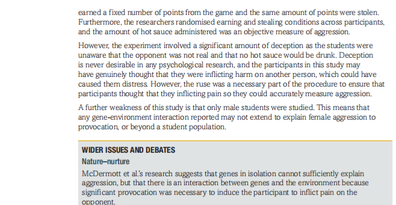
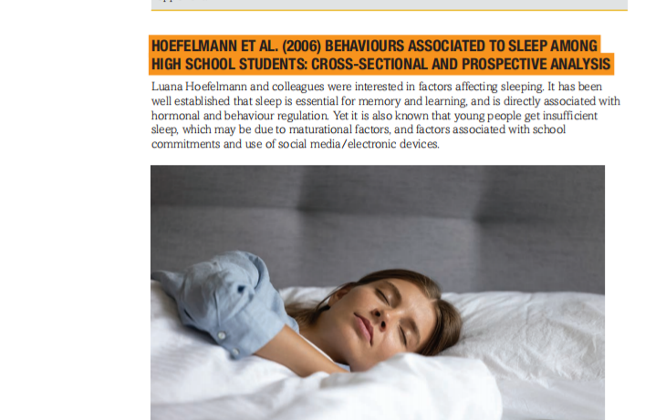

Chapter 18 — Studies in Biological Psychology
📚 Learning Objectives & Syllabus Map
⚡ Quick Summary
Chapter 18 is the Studies chapter in Topic C: Biological Psychology. It asks one classic study and one contemporary study, plus a second contemporary study that your teacher can choose. The exam almost always asks you to describe a study (aim, sample, procedure, results, conclusion) and evaluate it using issues such as validity, reliability, ethics and generalisability.
| Study | Focus | Method | Exam role |
|---|---|---|---|
| Raine et al. (1997) | Brain abnormalities in murderers pleading NGRI | Quasi-experiment / PET scan | Classic study — 8-mark evaluation |
| Brendgen et al. (2005) | Genetic vs environmental effects on physical and social aggression in 6-year-old twins | Twin study / teacher & peer ratings | Contemporary study — describe + evaluate |
| McDermott et al. (2008) | MAOA gene and aggression after provocation | Behavioural economics / hot-sauce paradigm | Contemporary choice A |
| Hoefelmann et al. (2006) | Sleep quality and lifestyle factors in Brazilian high-school students | Questionnaire / cross-sectional + prospective | Contemporary choice B |
🎯 Exam Key Points
- You must know one classic and one contemporary study in detail. The classic is fixed: Raine et al. (1997). The contemporary is usually Brendgen et al. (2005), unless your teacher chooses McDermott or Hoefelmann.
- Exam questions usually follow AMSPRC: Aim, Method, Sample, Procedure, Results, Conclusion.
- For evaluation, use the textbook headings: validity, reliability, generalisability, objectivity/subjectivity, credibility, ethics and nature–nurture.
- When you evaluate, always explain why the point is a strength or weakness — do not just name it. (AO3)
Each study section below follows the same six-step path. This is not random: it mirrors how examiners mark your answer.
- Background & Aim: What question were the researchers trying to answer?
- Sample: Who took part? How many? What was special about them?
- Procedure: What exactly happened to the participants? What did they do?
- Results: What patterns did the data show? Use numbers where possible.
- Conclusion: What did the researchers conclude?
- Evaluation: What are the strengths and weaknesses, and why?
🧠 Classic Study — Raine et al. (1997)
Key question: Do people who have committed murder show different patterns of brain activity from matched non-murderers?
1. Background & Aim
Previous research had suggested a link between dysfunction in the prefrontal cortex（前额叶皮层）and violent behaviour. Raine and colleagues wanted to test whether murderers who pleaded "not guilty by reason of insanity"（NGRI，因精神错乱而无罪）would show different brain activity from a control group of matched non-murderers.
⚡ Aim in one sentence
To investigate whether brain activity in murderers differed from that in a control group of matched non-murderers.
2. Sample
- Experimental group: 41 people (39 males, 2 females) convicted of murder or manslaughter and pleading NGRI.
- Within this group:
- 6 had schizophrenia（精神分裂症）
- 23 had suffered organic brain damage or head injury
- 3 were substance abusers
- 2 had an affective disorder（情感障碍）
- 2 had epilepsy（癫痫）
- 3 had hyperactivity and/or learning disability
- 2 had been diagnosed with passive-aggressive disorder or paranoid personality disorder
- Control group: 41 people matched on age and gender (39 males, 2 females).
- All participants were screened for general health, had a physical examination, gave access to medical history and had a psychiatric interview.
- Controls were excluded if they had a history of seizures, head trauma or substance misuse.
- All remained medication-free for two weeks before the PET scan.
3. Procedure
- All participants were given a Continuous Performance Task (CPT)（持续执行任务）. This is a task where you have to focus on a sequence of blurred numbers — it keeps attention active so the researchers can compare brain activity.
- Participants practised the CPT for 10 minutes.
- They were injected with a radioactive glucose tracer called fluorodeoxyglucose (FDG). This tracer is taken up by active brain cells, so areas with higher metabolic activity show more FDG.
- After a further 32 minutes on the CPT, a PET scan was carried out.
- The PET scan measured the metabolic rate（代谢率）in different brain areas — this is used as an indicator of activity level.
🎯 Exam Tip
If a question asks you to describe the procedure, include: the CPT, the FDG injection, the 32-minute wait, and what the PET scan measured. If it asks you to describe the sample, give the numbers (41 + 41), the matching, and at least two exclusion criteria.
4. Results
The NGRI murderers showed several differences compared with controls:
| Brain area | What was found in murderers | What it might mean |
|---|---|---|
| Prefrontal cortex（前额叶皮层） | Lower activity in both lateral and medial areas | Linked to impulsivity, poor self-control and inability to learn from consequences |
| Parietal areas（顶叶区域） | Lower activity, especially in the left angular gyrus and bilateral superior parietal regions | Associated with attention and language processing |
| Occipital lobe（枕叶） | Higher activity | Visual processing area — less directly related to violence |
| Temporal lobe（颞叶） | Identical activity to controls | No difference found here |
| Corpus callosum（胼胝体） | Lower activity | Reduced communication between the two brain hemispheres |
| Amygdala（杏仁核） | Asymmetrical activity: lower in the left, higher in the right | Linked to emotional regulation and fear responses |
| Medial temporal lobe / hippocampus（内侧颞叶/海马体） | Asymmetrical activity: lower in the left, higher in the right | Linked to learning and memory |
| Thalamus（丘脑） | Higher activity on the right side | Involved in sensory relay and arousal |
5. Conclusion
Raine et al. concluded that:
- There was support for their hypothesis: murderers pleading NGRI showed brain dysfunction in areas previously linked to violent behaviour.
- Prefrontal cortex dysfunction may relate to impulsivity, lack of self-control and inability to learn from consequences.
- The hippocampus, amygdala and thalamus are involved in learning and emotion; abnormal activity here could mean criminals cannot modify their behaviour by learning from consequences.
6. Evaluation
✅ Strengths
- Large sample for this population: 41 severely violent offenders is the largest sample studied in this way at the time, and matched controls improve validity.
- Controlled confounds: Participants were medication-free for two weeks; researchers tried to rule out effects of handedness and head injury.
- Standardised procedure: All participants did the same CPT and PET protocol, allowing objective comparison.
❌ Weaknesses
- Unrepresentative sample: NGRI murderers are not typical of all violent offenders; findings cannot explain other types of violence or criminality.
- Correlation not causation: Lower brain activity might be a result of violent offending, substance use or head injury, not a cause.
- Ethical issues: PET involves a radioactive tracer. Controls did not need a PET scan for clinical reasons, so they were exposed to unnecessary harm. Withholding medication from schizophrenic participants may also have worsened symptoms.
This study is socially sensitive: if criminality is seen as biologically determined, it may send the message that offenders are not responsible for their actions. Raine and colleagues insisted that their study was not intended for diagnosis or criminal responsibility — it only shows a correlation, not a cause.
👯 Contemporary Study — Brendgen et al. (2005)
Key question: Is social aggression caused more by genes or by environment, and how is it related to physical aggression?
1. Background & Aims
Much previous aggression research had focused on physical aggression. Brendgen and colleagues were interested in social aggression（社会性攻击）— behaviour such as ignoring others, spreading rumours or threatening to withdraw friendship. Social aggression can be overt（公开的）or covert（隐蔽的）.
The researchers had three aims:
- To see if social aggression could be caused by genes or the environment.
- To see if social aggression shared the same cause as physical aggression.
- To see if one type of aggression leads to another type.
2. Sample
- Participants came from the Quebec Newborn Twin Study (QNTS).
- Twin pairs born between November 1995 and July 1998.
- At the start of the study, 322 pairs of twins were tested.
- Complete data at all stages were gathered on 234 twin pairs.
- Breakdown of the 234 pairs:
- 44 pairs: MZ males
- 50 pairs: MZ females
- 41 pairs: DZ males
- 32 pairs: DZ females
- 67 pairs: mixed-sex DZ twins
3. Procedure
Data were gathered longitudinally（纵向地）at:
- 5, 18, 30, 48 and 60 months
- and again at age six years — this final data set was the focus of the study.
Two ratings of each twin's behaviour were collected:
- Teacher ratings in the spring term of the school year.
- Peer ratings by classmates.
The ratings used established scales:
- Preschool Social Behaviour Scale (PSBS-T; Crick et al., 1997)
- Direct and Indirect Aggression Scales (Björkvist, Lagerspetz et al., 1992)
Items included:
- Social aggression: "To what extent does the child try to make others dislike a child?"
- Physical aggression: "To what extent does the child get into fights?"
Each item was scored on a three-point scale: 0 = never; 1 = sometimes; 2 = often.
4. Results
| Finding | What the data showed | Interpretation |
|---|---|---|
| Physical aggression | MZ twin pairs were much more alike than same-sex DZ twin pairs in both teacher and peer ratings. | Physical aggression has a strong genetic component. |
| Social aggression | MZ and DZ twin pairs had roughly equal correlations. | Social aggression is better explained by shared environment than by genes. |
| Relationship between the two | A correlation was found between physical and social aggression, best explained by genetic factors. | The general tendency to be aggressive may be genetic, but the way it is expressed depends on environment. |
| Direction of influence | Physical aggression may lead to social aggression, but not the other way around. | As children grow and develop language/cognitive skills, they learn more "socially acceptable" ways to express aggression. |
5. Conclusion
There seems to be a strong genetic component to physical aggression, but not to social aggression, which is more likely due to environmental effects. Children who are physically aggressive are also more likely to show social aggression, probably because of an interaction between genes and environment. As children grow, they become more socially aggressive because of social conventions on physical violence and because they develop different ways to express themselves.
6. Evaluation
✅ Strengths
- Multiple sources of data: Both teachers and peers rated the children, which increases validity through triangulation.
- Longitudinal design: Data were collected from early childhood to age six, allowing researchers to track development over time.
- Large twin sample: 234 twin pairs with a clear MZ/DZ breakdown.
- Potential application: If physically aggressive behaviour can be identified early, parents and teachers can intervene before it becomes a habit.
❌ Weaknesses
- Small sub-group sizes: When split into MZ males, MZ females, DZ males, etc., each group is quite small, making generalisation difficult.
- Peer ratings by six-year-olds: Young children may not be reliable raters; asking them to judge classmates could lead to bias or labelling.
- Zygosity check: Only some twins had a DNA test; others were checked only by physical resemblance, which may reduce validity.
- Extraneous variables: Many factors in the children's lives could explain aggression, such as family environment or school context.
🧬 Contemporary Choice A — McDermott et al. (2008)
Key question: Does the MAOA gene（单胺氧化酶 A 基因）affect how aggressively people respond when provoked?
1. Background & Aims
McDermott combined two areas: genetics and behavioural economics（行为经济学）. Behavioural economics studies how people make decisions — especially when choices involve fairness, punishment and self-interest. The researchers wanted to see whether the MAOA gene influenced aggression after provocation.
- MAOA-L = low-activity MAOA gene variant
- MAOA-H = high-activity MAOA gene variant
Previous research suggested that MAOA-L individuals might be more likely to develop anti-social behaviour problems.
2. Sample
- 78 male college students.
- Genetic samples determined whether they were MAOA-H or MAOA-L carriers.
- 27% were MAOA-L; the rest were MAOA-H.
- Women were excluded because MAOA activity is harder to assign in females (the gene is on the X chromosome).
3. Procedure — the "power-to-take" game
Participants played a computerised game against an unseen "opponent". In reality, there was no opponent — the responses were computer-generated. This was a deception, but necessary to measure real aggressive behaviour.
- Quiz phase: Participants answered 5 multiple-choice vocabulary questions. Each correct answer earned 20 points. Points could be exchanged for money (10 points = US$1). Maximum earnings: US$10.
- Stealing phase: After a short delay, the "opponent" decided to steal a percentage of the participant's earnings: either 80% (high take) or 20% (low take).
- Punishment phase: Participants could punish the opponent by forcing them to drink hot sauce. They could also trade their hot-sauce allocation for money. The more hot sauce they used, the more aggressive the response was assumed to be.
- Participants played four rounds, each against a different "opponent".
Dependent variable: the amount of hot sauce allocated to the opponent.

Figure 18.1 — Percentage of MAOA-L and MAOA-H participants who gave some / maximum hot sauce when 80% or 20% of earnings were stolen.
4. Results
| Condition | MAOA-L | MAOA-H | Interpretation |
|---|---|---|---|
| 80% earnings stolen — gave some hot sauce | 75% | 62% | MAOA-L more aggressive under high provocation |
| 20% earnings stolen — gave some hot sauce | 40% | 34% | Smaller difference when provocation is low |
| 80% earnings stolen — gave maximum hot sauce | 44% | 19% | Strong effect under high provocation |
| 20% earnings stolen — gave maximum hot sauce | 12% | 6% | Weak effect under low provocation |
- A significant difference was found between MAOA-L and MAOA-H participants when 80% of earnings were stolen (p < 0.01).
- No significant difference was found when only 20% of earnings were stolen (p = 0.19).
5. Conclusion
The greater the provocation, the more aggressive people became. MAOA-L participants were more aggressive than MAOA-H participants when provoked, especially under high provocation. This supports a gene–environment interaction（基因-环境交互作用）: genes alone do not cause aggression, but they may make some individuals more likely to respond aggressively in a provoking environment.
6. Evaluation
✅ Strengths
- Objective behavioural measure: Hot-sauce allocation is a behavioural measure rather than self-report, which reduces subjectivity.
- Controlled procedure: All participants played the same game with the same rules and point manipulations, increasing reliability.
- Gene–environment interaction: The study shows that provocation is needed for the MAOA effect to appear — this moves beyond simple genetic determinism.
❌ Weaknesses
- Ecological validity: Forcing an unseen opponent to drink hot sauce is not realistic everyday aggression.
- Deception: Participants were deceived about the opponent. Deception is ethically problematic and may have caused distress.
- Sample bias: Only male college students were studied, so findings may not apply to females or non-student populations.
- Operationalisation of aggression: Allocating hot sauce is an unusual measure of aggression; it may not represent real-life verbal or physical aggression.
😴 Contemporary Choice B — Hoefelmann et al. (2006)
Key question: Which lifestyle factors are associated with sleep quality and duration in high-school students?
1. Background & Aims
Sleep is essential for memory and learning. It is also linked to hormonal and behavioural regulation. The researchers wanted to investigate factors affecting sleep in high-school students, including lifestyle variables such as physical activity, diet and screen time.
⚡ Aim in one sentence
To investigate factors affecting the quality and duration of sleep among high-school students.
2. Sample
- Initially, approximately 2,000 students were randomly selected from 20 schools in Brazil.
- Students were aged 14–24 years and enrolled in night classes at public schools.
- Schools were in two Brazilian cities: Florianópolis (southern Brazil) and Recife (northern Brazil).
- Ten schools from each municipality were selected.
- 989 students completed the initial assessment and the post-intervention assessment.
3. Procedure
Data were collected at two time points:
- March 2006 (initial assessment)
- December 2006 (9 months later)
Students completed a questionnaire in their school classrooms. The questionnaire included questions on:
- Physical activity and exercise habits
- Eating habits and snack/soft-drink consumption
- Time spent watching television and playing computer games
- Sleep quality and duration
The sleep questions were:
- "How often do you think that you sleep well?" — answered on a 5-point scale (always / almost always / sometimes / almost never / never). "Always" and "almost always" were judged as good sleep quality; the rest as poor.
- "How many hours, on average, do you sleep per day?" — answers under 8 hours were judged as insufficient; 8 hours or more as sufficient.
- Cross-sectional design（横断设计）: compares different groups or variables at a single point in time — here, the initial questionnaire in March 2006.
- Prospective design（前瞻设计/纵向）: follows the same participants over time to observe changes — here, comparing March 2006 with December 2006.

Figure 18.2 — Sleep is essential for learning and memory; poor sleep is linked to lifestyle factors such as diet and screen time.
4. Results
| Measure | Cross-sectional | Prospective | Key finding |
|---|---|---|---|
| Poor sleep quality | 45.7% | 45.8% | High and stable over nine months |
| Good sleep quality | 54.3% | 54.2% | High and stable over nine months |
| Sleep under 8 hours | 76.7% | 77.5% | Most students had insufficient sleep |
| Sleep 8 hours or more | 23.3% | 22.5% | Only a minority had sufficient sleep |
Cross-sectional findings:
- Students with lower physical activity were less likely to report poor sleep quality.
- Higher snack consumption was significantly associated with poor sleep quality.
- For sleep duration: higher muscular strength/endurance, higher snack consumption and more TV watching were less likely to report long sleep; more soft-drink consumption was associated with shorter sleep.
Prospective findings:
- No behaviours were associated with sleep quality.
- About 5 in 10 students reported poor quality sleep at both time points.
- 8 in 10 reported insufficient sleep at both time points.
5. Conclusion
Poor sleep quality and insufficient sleep duration were common among these Brazilian students and remained stable over nine months. Some lifestyle factors were associated with poor sleep in the cross-sectional analysis, but the prospective analysis failed to confirm these associations. This suggests that the links may be correlational rather than causal.
6. Evaluation
✅ Strengths
- Large sample: Nearly 1,000 participants from 20 schools in two cities.
- Ethical permission: Approved by two ethics committees; negative consent was used for minors.
- Application: Findings could inform health campaigns to promote better sleep habits among young people.
❌ Weaknesses
- Self-report data: Sleep duration, quality and lifestyle were all self-reported, which may be inaccurate (social desirability, poor recall).
- Night-school sample: Only students enrolled in night classes were included, limiting generalisability to day-school students.
- Short prospective period: Only nine months; more than 50% of the original sample was lost to follow-up.
- Correlational: Cannot establish causation between lifestyle and sleep quality.
📝 Exam Practice & Model Answers
⚡ How to answer study questions
For any 8-mark "evaluate" question, use a paragraph structure: Point → Evidence from the study → Why it is a strength/weakness (AO3). For describe questions, follow AMSPRC in order.
Exam Practice 1 — Raine et al. (1997) sample (2 marks)
Question: Describe the sample used by Raine et al. (1997).
Model answer
The sample consisted of two groups of 41 participants matched for age and gender (39 males and 2 females in each). The experimental group were murderers pleading NGRI; six had schizophrenia, 23 had brain damage/head injury, and the group included substance abusers and people with affective disorders. The control group were non-murderers screened for head trauma and substance misuse. (2 marks)
Exam Practice 2 — Improvement to Raine (2 marks)
Question: Explain one improvement that could be made to Raine et al.'s (1997) study of brain activity in murderers.
Model answer
One improvement would be to include a wider range of violent offenders, not just those pleading NGRI. This would increase the representativeness of the sample because NGRI murderers may have unusual characteristics (such as mental illness or head injury) that do not apply to all violent criminals. (2 marks)
Exam Practice 3 — Contemporary study procedure & validity (7 marks)
Question: During your studies of biological psychology, you will have learned about one of the following contemporary studies: McDermott et al. (2008) or Hoefelmann et al. (2006).
- Describe the procedure of your chosen study. (3 marks)
- Explain two weaknesses of your chosen contemporary study in terms of validity. (4 marks)
Model answer — McDermott et al. (2008)
(a) The procedure used a "power-to-take" game. Male participants answered vocabulary questions to earn points convertible to money. A computer-generated "opponent" then stole either 20% or 80% of the participant's earnings. Participants could punish the opponent by allocating hot sauce, with more hot sauce indicating greater aggression. They played four rounds.
(b) One weakness is low ecological validity: forcing an unseen opponent to drink hot sauce is not like real-life aggression, which is usually verbal or physical. Therefore we cannot generalise the findings to everyday aggressive behaviour. Another weakness is deception: participants believed there was a real opponent. This raises ethical concerns and may have caused distress, while also making the task feel artificial. (4 marks)
Model answer — Hoefelmann et al. (2006)
(a) Students in 20 Brazilian schools completed a questionnaire in March 2006 and again in December 2006. Questions measured sleep quality ("How often do you think you sleep well?"), sleep duration ("How many hours do you sleep per day?") and lifestyle factors such as physical activity, snack/soft-drink consumption and TV/computer time.
(b) One weakness is subjectivity / self-report bias: all data about sleep and lifestyle came from self-report, which may be inaccurate or affected by social desirability, reducing validity. Another weakness is the night-school sample: only students enrolled in night classes took part, so the findings may not apply to day-school students, limiting population validity. (4 marks)
Exam Practice 4 — Evaluate Raine et al. (1997) (8 marks)
Model answer
Raine et al. (1997) used PET scanning to compare brain activity in 41 murderers pleading NGRI with 41 matched controls. A strength is that the study used a relatively large sample for this difficult-to-access population and matched controls for age and gender, which increases internal validity. Another strength is the standardised CPT and PET procedure, allowing objective measurement of metabolic activity.
However, the sample is unrepresentative because NGRI murderers often have mental illness or brain injury; the findings cannot explain all types of violence or criminality. A further weakness is that the study is correlational: low brain activity might be a consequence of violent behaviour, substance abuse or head injury rather than a cause. Finally, there are ethical issues: PET scans expose participants to radiation, and controls did not clinically need a scan, raising concerns about harm.
Overall, the study provides useful evidence about biological factors in violence, but it cannot establish causation and must be interpreted cautiously. (8 marks)
🎯 Mark-scheme logic
- 2-mark describe: One clear fact = 1 mark; two facts = 2 marks. Always include a number if possible.
- 4-mark evaluate: Two points, each with a reason why it is a strength/weakness. No generic AO1.
- 8-mark evaluate: Around 4–5 evaluation points with AO3. Briefly describe the study first (1–2 sentences) but focus on evaluation. Mention both strengths and weaknesses.
🔑 Key Terms Glossary
| Term | Definition |
|---|---|
| Angular gyrus（角回） | Part of the parietal lobe associated with memory, language processing and attention. |
| Corpus callosum（胼胝体） | A band of nerve fibres that joins the two brain hemispheres and allows communication between them. |
| Schizophrenia（精神分裂症） | A major psychosis characterised by disturbances in thinking, hallucinations and delusions. |
| Thalamus（丘脑） | Part of the brain associated with sensory perception and consciousness. |
| Affective disorder（情感障碍） | Disturbances in mood or emotion, such as depression. |
| Hyperactivity（多动） | Restlessness, impulsivity and excess physical activity. |
| Passive-aggressive disorder（被动攻击型障碍） | Suspicion and distrust of others; an unwillingness to engage in social and occupational activity. |
| PET scan（正电子发射断层扫描） | A brain-imaging technique that measures metabolic activity by detecting a radioactive tracer (FDG). |
| Continuous Performance Task (CPT) | A sustained-attention task used to keep brain activity stable during scanning. |
| MZ twins（同卵双胞胎） | Monozygotic / identical twins; share 100% of genes. |
| DZ twins（异卵双胞胎） | Dizygotic / non-identical twins; share about 50% of genes. |
| Social aggression（社会性攻击） | Aggressive behaviour that harms relationships, such as spreading rumours or excluding others. |
| Physical aggression（身体攻击） | Aggressive behaviour that causes physical harm, such as hitting or fighting. |
| MAOA gene（单胺氧化酶 A 基因） | A gene that affects the breakdown of neurotransmitters such as serotonin and dopamine; low activity (MAOA-L) has been linked to aggression. |
| Behavioural economics（行为经济学） | A field combining psychology and economics to study how individuals make decisions. |
| Cross-sectional design（横断设计） | Collecting data from a population or sample at a single point in time. |
| Prospective design（前瞻/纵向设计） | Collecting data from participants over a period of time to observe changes or trends. |
| Negative consent（消极同意） | Participants are given the opportunity to decline to take part; if they do not opt out, they are included. |